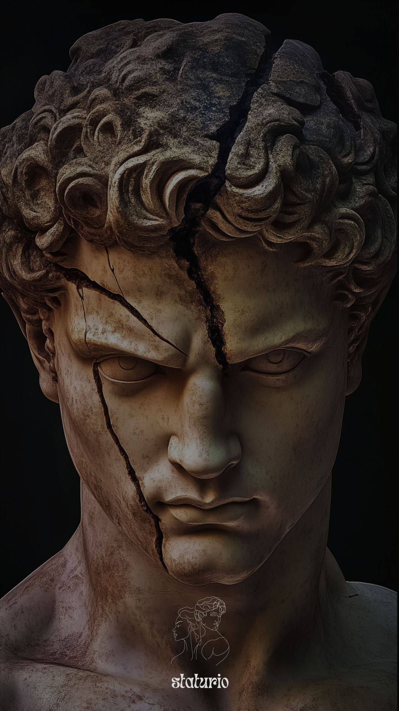

База
Техника, основные движения, контроль амплитуды и правильное ощущение мышц.
Labor
Тренировки направлены на атлетичное телосложение: плечи, грудь, спина, руки, ноги и корпус. Без случайных упражнений и хаотичных программ.

Техника, основные движения, контроль амплитуды и правильное ощущение мышц.
Постепенное увеличение нагрузки, объема и сложности без перетренированности.
Акцент на пропорции, визуальную эстетику, корпус и детализацию.
Flow